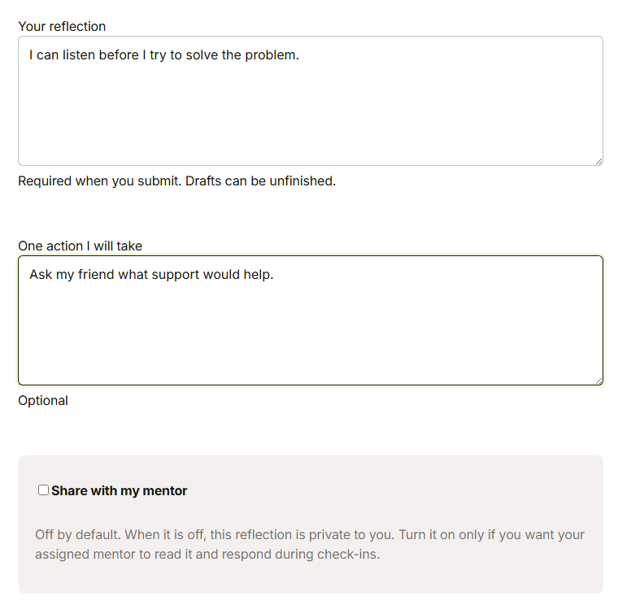
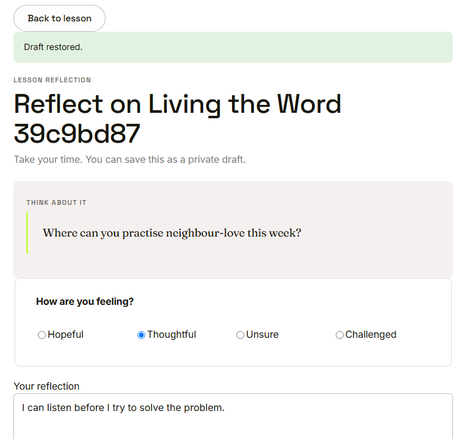
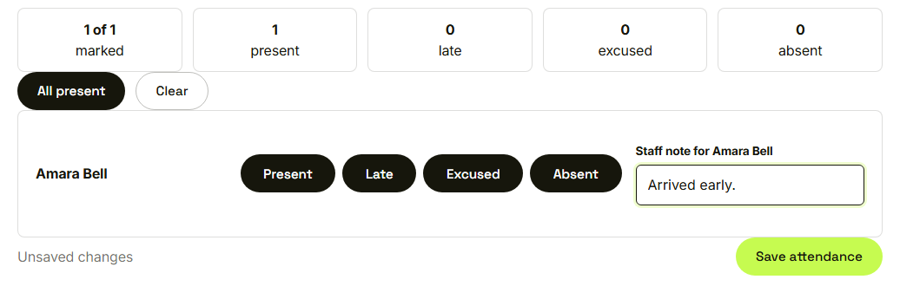

Waypoint · Video 110
Protecting work you have not saved
A warning before you leave, and a draft that comes back
Typed, not yet submitted

Words typed, nothing submitted
Waypoint asks first
You have unsaved reflection changes
Save your reflection draft before leaving?
OK saves the draft; Cancel keeps you on the page
The same warning appears if you close the tab
Draft restored

Her words and her mood, as she left them
Unsaved changes, in plain words

Unsaved changes, until she saves
Things to remember
Leaving with unsaved work brings a warning
You can save a draft, or stay and keep going
A saved draft is restored when you return
Pages say when changes are unsaved